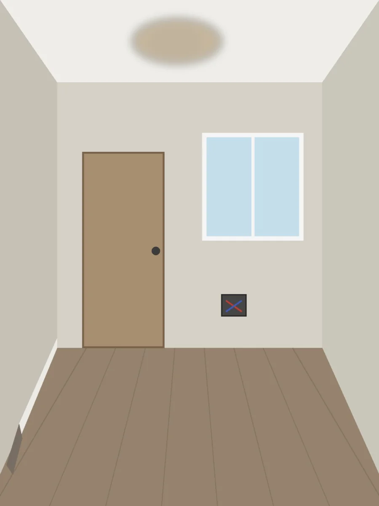
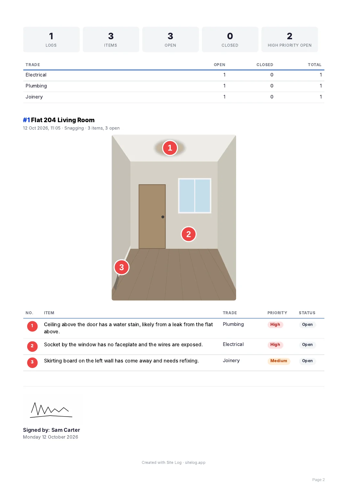

Walk the room. Talk. Send the list.
Take one photo, tap each item and say what is wrong, in your own language. Site Log writes the numbered list and builds the PDF before you leave the room.
On iPhone, version 2 is on its way.
Free to start: 3 projects and 5 write-ups a month. No card needed.
Made for site managers, supervisors, snagging inspectors, clerks of works and subcontractors.

-
Ceiling above the door has a water stain, likely from a leak from the flat above.
-
Socket by the window has no faceplate and the wires are exposed.
-
Skirting board on the left wall has come away and needs refixing.
From walk to report
Five steps, in the order you already work. No forms to fill in.
-

Photo
Take one photo of the area, or choose one from your library.
-

Mark
Tap or circle each item. Each mark gets the next number.
-

Talk
Say what is wrong, in any language. Or type it.
-

Generate
One item for each mark, with a trade and a priority.
-

Send
Save it to the project and send a PDF with your logo and signature.

A report your client can read
The PDF carries your logo and signature, the marked photo and the list.
- By log or by trade. Group the report by trade so each trade finds its own items.
- All items, or open items only. Send the report again as items are closed.
- Close it out. Mark items closed as they are fixed, and assign them to a person or a subcontractor.
Built for real sites
Noise, many languages, and dead spots with no signal.
- Any language
- Speak yours. The report is written in the language you choose, from 37. A Polish electrician, a Hindi-speaking foreman and an Arabic-speaking supervisor all produce the same clean English report.
- No signal
- Capture works with no signal. Your photo, marks and recording are kept on the phone and written up when you are back online.
- Calls and locked screens
- If a call comes in or the phone locks, what you have said so far is kept. Tap to carry on.
- Numbers that match
- The photo, the list and the PDF always show the same numbers. Delete an item and the rest renumber.
- Trades and priorities
- Every item is given one of 17 trades and a priority of high, medium or low. You can change either.
Free, and Pro when you need more
Every language is included on both plans.
| What you get | Free | Pro |
|---|---|---|
| Projects | 3 | Unlimited |
| AI write-ups a month | 5 | 600 |
| PDF reports a month | 3 | Unlimited |
| Report languages | All 37 | All 37 |
| "Created with Site Log" line on reports | Yes | No |
| Price | Free | Shown in the app before you buy |
An AI write-up is one walk turned into a list. You can always type the items yourself, which uses none. Site Log Pro is a subscription, monthly or yearly, bought in the app through Apple or Google. It renews automatically until you cancel, which you can do at any time in your App Store or Google Play account settings.
What happens to your recording
Site Log uses an AI service to write up your walk. This is what it is given.
- It asks firstThe app asks for your agreement before the first recording is sent.
- Voice and notes onlyYour recording and typed notes go to OpenAI to be turned into text and written up. Your photo is not sent to it.
- Stored in LondonYour logs and photos are kept on servers in London. Delete your account in the app and they go with it.
Start with the free plan.
On iPhone, version 2 is on its way.